เครื่องมือช่างยนต์ WYNNTOOLS
เครื่องมือเฉพาะทางสำหรับอู่และช่างยนต์ ตั้งแต่เหล็กดูด 3 ขา 3–16 นิ้ว ชุดถ้วยถอดกรองน้ำมัน 14 ชิ้น ตัวถอดสปริงโช๊ค ประแจกากบาทถอดล้อ ไปจนถึงกระบอกอัดจารบี ปืนฉีดลม เกจวัดลมยาง และโคมไฟ LED ซ่อมรถ
เครื่องมือช่างยนต์ — 57 รายการ
เครื่องมือซ่อมเครื่องยนต์ Engine Service Tools 6 รายการ
วัสดุ: CR-V
| รูป | รหัส | ชื่อสินค้า | ขนาด | จำนวน/ลัง | วัสดุ |
|---|---|---|---|---|---|
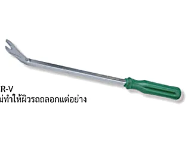 |
W4584 | ไขควงงัดกิ๊ปPlastic Buckle Screwdriver งัดกิ๊ปได้โดยไม่ทำให้ผิวรถถลอก |
8" | 25/100 | CR-V |
| W0456A | ชุดถ้วยถอดกรองน้ำมันเครื่อง 14 ชิ้นOil Filter Wrench Set | 14 ชิ้น (65-101mm) | 5 | CR-V | |
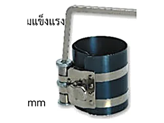 |
W0458A | ลานรัดแหวนลูกสูบPiston Ring Compressor ทุกเบอร์ในตระกูลนี้หน้าตาเหมือนกัน ต่างที่ขนาด แผ่นเหล็กรัดหลอมจากเหล็กสปริง ยืดหยุ่นสูง ประกอบเข้ากับเฟืองหมุนพร้อมตัวล็อค |
3# (53-175mm) | 1/48 | CR-V |
| W0458B | 4# (60-175mm) | 1/48 | CR-V | ||
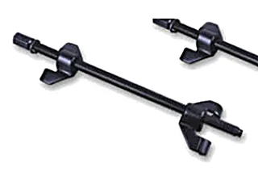 |
W2916B | ตัวถอดสปริงโช๊คDrop Forged Coil Spring Compressor ใช้กับด้ามขัน 1/2" DR. หรือด้ามบล็อกขนาด 21 มม. ได้ |
15 นิ้ว / 380mm | 12 | CR-V40 |
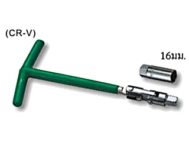 |
W0196 | บล็อกถอดหัวเทียนSpark Plug Wrench ผิวเคลือบโครเมียมมันวาว เปลี่ยนบล็อกได้หลายประเภท |
16mm, 21mm | 8/48 | CR-V |
ชุดบล็อกและไขควงสำหรับช่างยนต์ Auto-Use Socket & Screwdriver Sets 3 รายการ
วัสดุ: CR-V
| รูป | รหัส | ชื่อสินค้า | ขนาด | จำนวน/ลัง | วัสดุ |
|---|---|---|---|---|---|
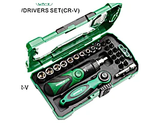 |
W3480 | ชุดบล็อกด้ามฟรี และไขควง 26 ชิ้น26pcs Socket Screwdrivers Set มาพร้อมกล่องเก็บ · ด้ามฟรี ไขควงปรับองศา ข้อต่อบล็อก |
ลูกบล็อก 1/4" 4-13mm 10 ชิ้น · แฉก PH0 PH1 PH1 PH2 PH2 PH3 · แบน 3,4,5,5,6,7mm | 20 | CR-V |
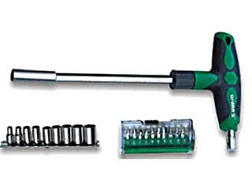 |
W0584 | ชุดซ่อมรถยนต์ บล็อกและไขควง 21 ชิ้น21pcs Auto-Use Repair Set หัวไขควงมีแม่เหล็ก ช่วยให้ถอดน็อตได้ง่ายขึ้น |
แฉก PH1 PH2 · แบน 4,5mm · ทอร์ค T15 T20 · หกเหลี่ยม 4,5,6mm · Pozidriv Pz1 Pz2 · ลูกบล็อก 5-13mm | 6/24 | CR-V |
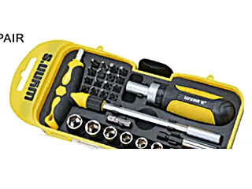 |
W3223 | ชุดซ่อมรถยนต์ บล็อกและไขควง 29 ชิ้น29pcs Auto-Use Repair Set ปลายด้ามไขควงติดแม่เหล็ก เปลี่ยนหัวไขควงได้ง่าย |
ลูกบล็อก 1/4" เบอร์ 4-12mm · ด้ามขันตัว T · ข้อแปลงบล็อก 50mm · ข้อแปลง 25mm · แฉก PH0 PH1 PH2 PH3 · แบน 4,5,6mm · ทอร์ค T10 T15 T20 T25 T30 · Pozidriv Pz0 Pz1 Pz2 Pz3 | 6/36 | CR-V |
เหล็กดูด และเครื่องมือถอดกรอง Pullers & Oil Filter Wrenches 14 รายการ
วัสดุ: SK-55 / CR-V
| รูป | รหัส | ชื่อสินค้า | ขนาด | จำนวน/ลัง | วัสดุ |
|---|---|---|---|---|---|
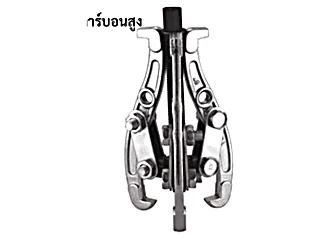 |
W0153A | เหล็กดูด 3 ขา3-Jaw Gear Puller ทุกเบอร์ในตระกูลนี้หน้าตาเหมือนกัน ต่างที่ขนาด ใช้กับการดูดเกียร์ ดูดแบริ่ง |
3"/75mm | 60 | SK-55 |
| W0153B | 4"/100mm | 40 | SK-55 | ||
| W0153C | 6"/150mm | 20 | SK-55 | ||
| W0153D | 8"/200mm | 10 | SK-55 | ||
| W0153E | 10"/250mm | 6 | SK-55 | ||
| W0153F | 12"/300mm | 4 | SK-55 | ||
| W0153G | 14"/350mm | 3 | SK-55 | ||
| W0153H | 16"/400mm | 2 | SK-55 | ||
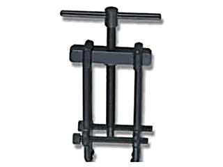 |
W0459A | เหล็กดูดแบริ่งArmature Bearing Puller ทุกเบอร์ในตระกูลนี้หน้าตาเหมือนกัน ต่างที่ขนาด ใช้ดูดแบริ่ง ดูดลูกปืน |
1# 19-35mm | 10/60 | CR-V |
| W0459B | 2# 24-55mm | 10/30 | CR-V | ||
| W0459C | 3# 27-76mm | 8/16 | CR-V | ||
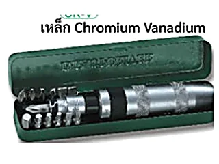 |
WS01 | ไขควงตอกกระแทก พร้อมดอกไขควงImpact-Driver Set | 20 | CR-V | |
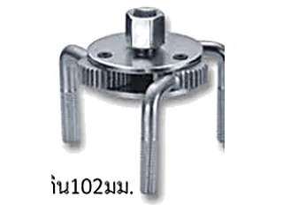 |
W0454B | ถอดกรองน้ำมัน ขากลม2-Way Oil Filter Wrench ใช้กับตัวกรองที่มีเส้นผ่านศูนย์กลางไม่เกิน 102 มม. · ด้ามขัน DR 1/2" หรือที่จับหมุน 13/16" |
ก้ามหนีบ 3 ขา · แกน 3/8" และ 1/2" | 36 | CR-V |
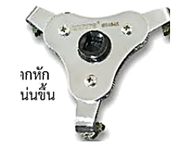 |
W0454A | ถอดกรองน้ำมัน ขาแบน2-Way Oil Filter Wrench ใช้กับตัวกรองที่มีเส้นผ่านศูนย์กลางไม่เกิน 102 มม. |
สามขา หมุนได้สองทาง | 48 | CR-V |
โคมไฟและอุปกรณ์ประจำรถ Work Lamps & Emergency Tools 3 รายการ
| รูป | รหัส | ชื่อสินค้า | ขนาด | จำนวน/ลัง |
|---|---|---|---|---|
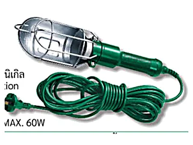 |
W0389B | โคมไฟแขวน ซ่อมรถWorking Lamp ส่วนทองแดงเคลือบนิกเกิล นำไฟฟ้าได้ดี · โคมเซรามิก ปลอดภัย ทนความร้อนได้สูง |
250V (2A 250V MAX 60W) | 12/24 |
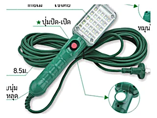 |
W4610 | โคมไฟแขวน ซ่อมรถยนต์ ไฟ LED 25 ดวง มีแม่เหล็กLED Working Torch with Strong Magnetic LED นำเข้าจากอเมริกา · สายยาว 8.5 ม. x 0.25 ตร.มม. · ตะขอหมุนได้ 360° · แม่เหล็กแปะติดได้ |
12.5W (900-1000LM) | 1/24 |
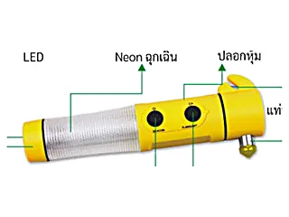 |
W4139 | ไฟฉายฉุกเฉิน ทุบกระจก ตัดเข็มขัดได้Multi-Function Installation Hammer ฉายไฟ LED · ไฟ Neon ฉุกเฉิน · ที่ตัดสายเข็มขัด · ค้อนทุบกระจก · แท่นแม่เหล็ก |
ใช้ถ่าน AA 2 ก้อน | 25/100 |
ประแจกากบาท เหล็กงัดยาง และประแจโซ่ Cross Rim Wrenches, Tyre Levers & Chain Wrenches 10 รายการ
วัสดุ: CR-V / SK-45
| รูป | รหัส | ชื่อสินค้า | ขนาด | จำนวน/ลัง | วัสดุ |
|---|---|---|---|---|---|
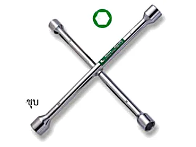 |
WS4 | ประแจกากบาทหกเหลี่ยม (ผิวกระจก)Cross Rim Wrench (Fully Polished) | 17-19-21-23mm · หนา 16mm ยาว 406mm | 20 | CR-V |
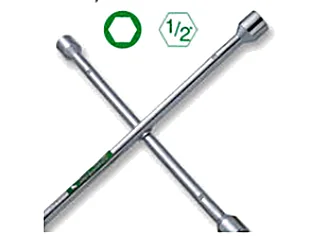 |
WS2 | ประแจกากบาทมีหัวข้อต่อ 1/2"Cross Rim Wrench (Chrome Plated) | 17-19-21mm + หัวข้อต่อ 1/2" · หนา 14mm ยาว 406mm | 20 | CR-V |
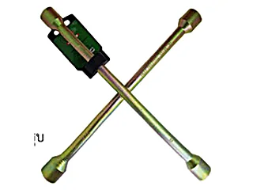 |
กากบาททอง | ประแจกากบาทหกเหลี่ยมชุบ (ผิวเคลือบกันสนิม)Cross Rim Wrench | 17-19-21-23mm | 20 | CR-V |
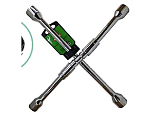 |
กากบาทพับ | ประแจกากบาทหกเหลี่ยมพับได้Cross Rim Wrench (Fully Polished) พับเก็บได้ |
17-19-21-23mm | CR-V | |
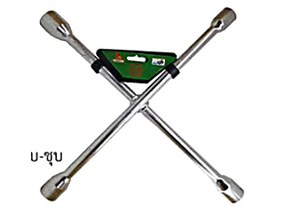 |
WS01-กากบาท | ประแจกากบาทหกเหลี่ยม (ชุบโครเมี่ยม)Cross Rim Wrench | 17-19-21-23mm | CR-V | |
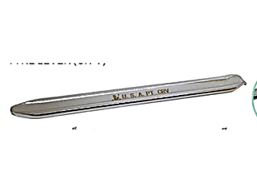 |
งัดยางMTT | เหล็กงัดยาง ตรา M.T.T.Tyre Lever | 12, 16, 20, 24 นิ้ว | CR-V | |
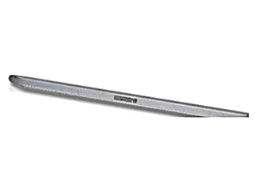 |
W0014C | เหล็กงัดยางTyre Lever ทุกเบอร์ในตระกูลนี้หน้าตาเหมือนกัน ต่างที่ขนาด |
20"/500mm | 36 | CR-V |
| W0014D | 24"/600mm | 24 | CR-V | ||
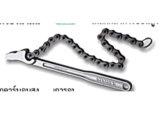 |
W0021B | ประแจโซ่ถอดกรองน้ำมันChain Wrench ทุกเบอร์ในตระกูลนี้หน้าตาเหมือนกัน ต่างที่ขนาด ขอบเขตการปรับโซ่ 60-180 มม. |
9"/225mm | 6/60 | SK-45 |
| W0021C | 12"/300mm | 6/36 | SK-45 |
กระบอกอัดจารบี กาพ่นสี และเกจวัดลมยาง Grease Guns, Spray Guns & Tyre Gauges 8 รายการ
วัสดุ: A-ALLOY / SK-55
| รูป | รหัส | ชื่อสินค้า | ขนาด | จำนวน/ลัง | วัสดุ |
|---|---|---|---|---|---|
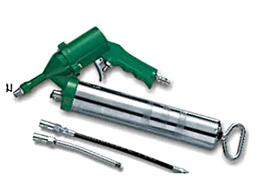 |
W0479 | กระบอกอัดจารบีแบบใช้ลม 400ccAir Grease Gun หัวต่อปืนลม 1/4" · ใช้ความดันลม 30-150 PSI จ่ายความดัน 1200-6000 PSI |
400CC | 10 | |
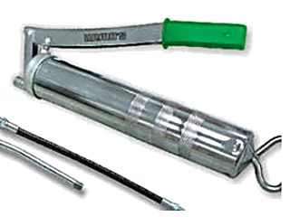 |
W2757 | กระบอกอัดจารบี 500ccGrease Gun ด้ามจับ Plastic cement จับได้กระชับมือ · มีท่อแข็งและท่ออ่อน |
500CC | 20 | |
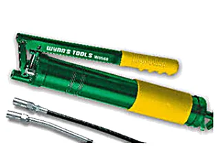 |
W0586 | กระบอกอัดจารบีอย่างดี 600cc เกรดงานอุตสาหกรรมHigh-Class Industrial Grease Gun มีปุ่มกดไล่ลมออก · หัวจ่ายเพิ่มลูกปืนเม็ดกลมโลหะป้องกันการไหลย้อนกลับ |
600CC | 10 | |
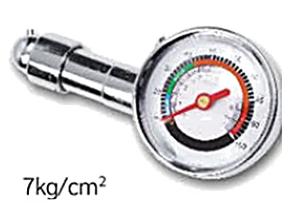 |
W4355 | เกจวัดลมยาง แบบเข็ม ขนาดเล็กTire Gauge แกนวัดคุณภาพสูง การวัดค่าแม่นยำ |
0-100psi หรือ 0.5-7kg/cm² | 10/100 | SK-55 |
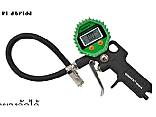 |
W4618 | เกจวัดลมยางดิจิตอล พร้อมหัวเติมDigital Tire Gauge สายเติมลม 80 มม. · ใช้ถ่าน AAA (มีแถมในชุด) · วาล์วปรับความแน่นกับจุกต่อยางล้อได้ |
สูงสุด 0.8 mpa (ปกติ 0.2-0.4 mpa) | 6/24 | |
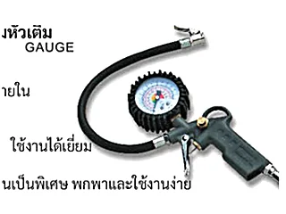 |
WTD-1 | เกจวัดลมยาง พร้อมหัวเติมTyre Inflator with Gauge โครงสร้างโลหะ แข็งแรงทนทานเป็นพิเศษ พกพาและใช้งานง่าย |
6/60 | ||
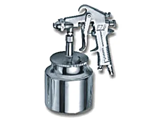 |
WF-75S | กาพ่นสี กาล่าง 750ccSpray Gun พ่นเคลือบได้อย่างสม่ำเสมอ น้ำหนักเบา ประหยัดการใช้สี |
750CC | 20 | A-ALLOY เหล็กอลูมิเนียมอัลลอย |
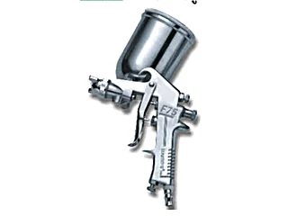 |
WF-75G | กาพ่นสี กาบน 400ccSpray Gun | 400CC | 20 | A-ALLOY เหล็กอลูมิเนียมอัลลอย |
ปืนฉีดลม สูบลม และกาหยอดน้ำมัน Air Blow Guns, Inflators & Oilers 8 รายการ
วัสดุ: SK-55
| รูป | รหัส | ชื่อสินค้า | ขนาด | จำนวน/ลัง | วัสดุ |
|---|---|---|---|---|---|
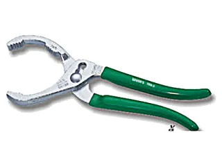 |
W0169A | คีมถอดไส้กรองOil Filter Wrench คีมจับช่วยเพิ่มแรงบีบ เพื่อถอดไส้กรองที่ถอดได้ยาก |
250mm | 6/60 | SK-55 |
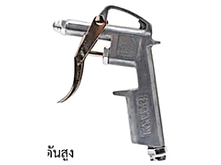 |
WB-101 | ปืนฉีดลม มีแกนBlowing Dust Gun โครงสร้างทองแดง ไม่รั่วไหล แรงดันสูง เหมาะสำหรับทำความสะอาด เป่าฝุ่นเครื่องจักร |
21X20.5X15cm | 10/120 | |
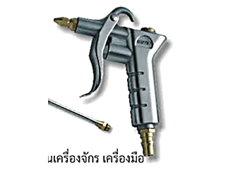 |
WB-102 | ปืนฉีดลม ปรับหัวได้ มีแกนBlowing Dust Gun วัสดุอลูมิเนียม ผิวขัดเงา น้ำหนักเบา ปรับขนาดรูหัวได้ |
ปากแกนฉีดเส้นผ่านศูนย์กลาง 4 มม. | 120 | |
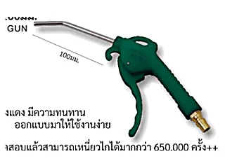 |
WB-103 | ปืนฉีดลม หัวฉีด 100 มม.Blowing Dust Gun แรงดัน 13 Bar ใช้ข้อต่อ Copper 20PM · ไกปืนทดสอบเหนี่ยวได้มากกว่า 650,000 ครั้ง |
หัวฉีด 100mm | 25/100 | |
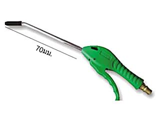 |
WB-104 | ปืนฉีดลม หัวฉีดยาว 170 มม.Plastic Blowing Dust Gun with Copper Nozzle แรงดัน 13 Bar · ข้อต่อทองแดง หัวฉีดอลูมิเนียม ด้ามจับพีวีซี |
หัวฉีด 170mm | 20/100 | |
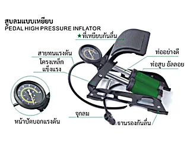 |
W3245 | สูบลมแบบเหยียบPedal High Pressure Inflator มีหน้าปัดบอกแรงดัน · ท่อสูบอัลลอย โครงเหล็กแข็งแรง · ที่เหยียบและฐานรองกันลื่น |
1/15 | ||
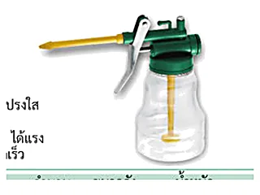 |
W0474 | กาหยอดน้ำมันPump Oiler กระบอก ABS โปร่งใส สายอ่อนบิดงอได้ |
250g | 12/120 | |
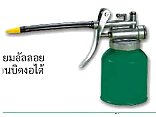 |
W0229B | กาเหล็กหยอดน้ำมัน สายอ่อน 250 มล.Pump Oiler กระบอกเหล็กอลูมิเนียมอัลลอย แข็งและทนทาน สายอ่อนบิดงอได้ |
250g | 10/120 |
อุปกรณ์เสริมช่างยนต์ Wheel, Filter & Workshop Accessories 5 รายการ
วัสดุ: CR-V / สแตนเลส / Z-ALLOY
| รูป | รหัส | ชื่อสินค้า | ขนาด | จำนวน/ลัง | วัสดุ |
|---|---|---|---|---|---|
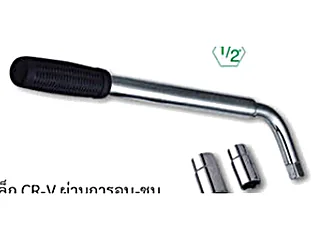 |
W0027 | บล็อกถอดล้อตัว LL-Tyre Tension Rod with Bend Handle ด้ามบล็อกเหล็กกล้าคาร์บอนสูง ป้องกันการกัดกร่อน |
17, 19, 21, 23mm | 12 | CR-V |
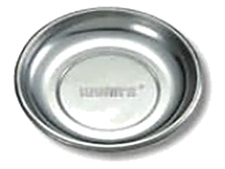 |
W2602 | ถาดสแตนเลส แม่เหล็กดูดStainless Steel Sucker ถาดมีแผ่นแม่เหล็ก มีฝาปิดยาง PVC · ใช้วางสกรู น็อต ตะปู |
150mm X 35mm | 10/40 | สแตนเลส 430 |
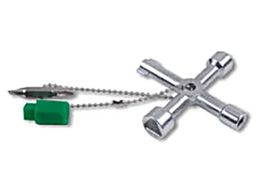 |
W4653 | กุญแจตู้ควบคุมกากบาทMultifunctional Cross Key ใช้ไขเปิดตู้ควบคุม สถานีรถไฟฟ้า รถไฟใต้ดิน ลิฟต์ ตู้ควบคุมในอาคาร และวาล์วปิด-เปิด |
50/200 | Z-ALLOY | |
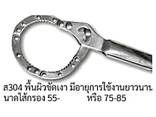 |
W3099A | ประแจถอดไส้หม้อกรองShackle Style Oil Filter Wrench ทุกเบอร์ในตระกูลนี้หน้าตาเหมือนกัน ต่างที่ขนาด ผิวขัดเงา อายุการใช้งานยาวนาน |
55-75mm | 6/60 | สแตนเลส 304 |
| W3099B | 75-85mm | 6/60 | สแตนเลส 304 |
เจอรหัสที่ต้องการแล้ว? กดที่รหัสเพื่อถามราคา
กดที่รหัสสินค้าในตาราง ระบบจะเปิด LINE พร้อมข้อความให้แล้ว หรือทักมาบอกรายการที่ต้องการก็ได้ ทีมงานเช็คสต็อกและแจ้งราคาส่งให้